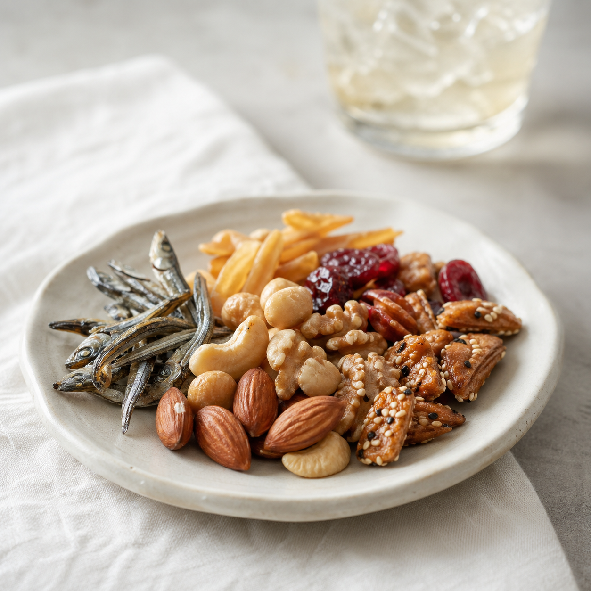

家飲み
好きなグラスで、好きなペースで。いつもの食卓に自然になじみます。
Concept
外で頑張った日も、家で静かに過ごしたい日も。お酒とおつまみがあるだけで、自分時間は少し整います。
好きなグラスで、好きなペースで。いつもの食卓に自然になじみます。
ひと口ずつ味わえる珍味は、夜を急がせない小さな相棒です。
高すぎず、軽すぎない。日常の延長に置ける、ちょうどいい贅沢。
Pairing
ビール、日本酒、ハイボール、ワイン。それぞれの香りや余韻に合う味わいを揃えました。

Beer
Sake
Highball
Wine
Products
Brand trust
食品メーカーとして培ってきた品質づくりを大切に、直営店やオンラインショップでもお届けしています。はじめての方にも選びやすい、安心感のあるおつまみブランドです。
More
FAQ
ビール、日本酒、ハイボール、ワインまで幅広く楽しめます。迷ったら香ばしいスナック系からがおすすめです。
自分へのご褒美はもちろん、お酒が好きな方への気軽な贈りものにも選びやすい商品です。
このLPのボタンから既存オンラインショップへ移動できます。リンク先は現在仮で「#」にしています。